Shortcuts for Common Actions
Shortcuts for Common Actions
WASD - Change Selected Tile
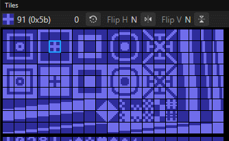
As well as using the mouse to select tiles, the WASD keys can be used to change the selected tile(s).
R - Rotate cursor tile
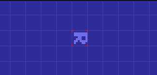
The R key can be use to rotate tiles by 90 degrees if Tile Rotate has been enabled for the current layer
F - Flip Horizontally, G - Flip Vertically
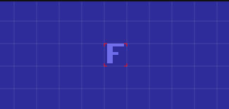
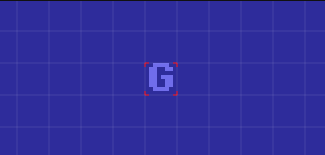
Arrow Keys - Move Grid Cursor, Enter / Insert - Place Selected Tile

As well as using the mouse to place tiles, the Arrow Keys can be used to move the grid cursor when the pen tool is selected.
Either the Insert or Enter keys can be used to place the selected tile(s)
Either the Insert or Enter keys can be used to place the selected tile(s)
/ or Right Mouse Click - Show the Tile Select Popup
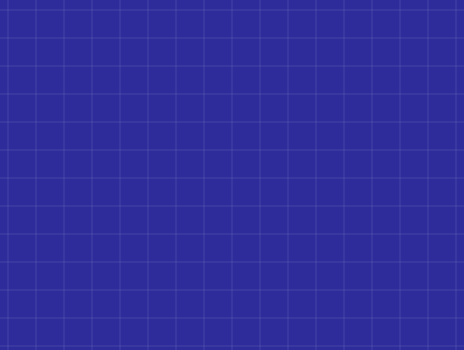
Forward slash (/) or Right Mouse Click can be used to bring up the tile select popup at the current position of the mouse
Shift / or Shift - Right Mouse Click - Show the Colour Select Popup
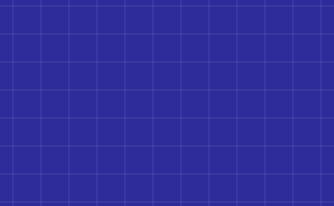
Shift - Forward slash (/) or Shift - Right Mouse Click can be used to bring up the colour select popup at the current position of the mouse
D - Draw using selected area
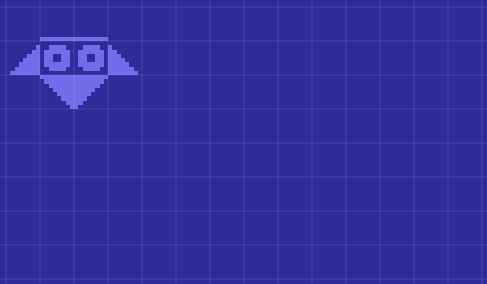
With the marquee tool selected (M) and an area selected, pressing D will switch back to the pen tool and the pen tool will draw with the tiles that were selected by the marquee
Ctrl-Arrow Keys Nudge selected tiles
With the marquee tool selected (M) and an area selected, holding Ctrl and pressing the Arrow Keys will nudge the selected tiles
If the marquee tool is selected, the selected tiles can be dragged with the mouse by holding Ctrl and then clicking and dragging the selected area
The selected tiles can also be dragged by switching to the Move (V) tool.
If the marquee tool is selected, the selected tiles can be dragged with the mouse by holding Ctrl and then clicking and dragging the selected area
The selected tiles can also be dragged by switching to the Move (V) tool.
Alt-Click on grid cell - Select Tile in cell
Holding Alt and clicking the mouse in a grid cell will select the tile in the grid cell. This has the same effect as using the eyedropper tool
Ctrl-E Show Tile Editor
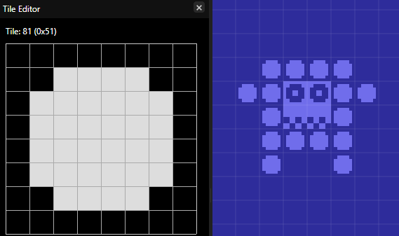
Double Clicking on a tile in the tile palette will bring up the tile editor for that tile.
Ctrl-E (Cmd-E on OSX) may also be used to hide/show the tile editor for the current tile
Ctrl-E (Cmd-E on OSX) may also be used to hide/show the tile editor for the current tile
Shift-WASD - Change Selected Foreground Colour
As well as using the mouse to select colours, the WASD keys with Shift held down can be used to change the foreground colour
X - Swap Foreground and Background Colours
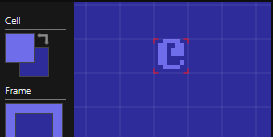
The X key can be used to swap the foreground and background colours
Ctrl-Shift-E - Colour Editor
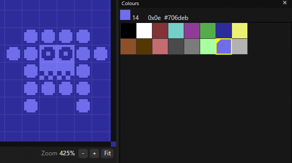
Ctrl-Shift-E or
Double clicking on a colour will bring up the colour editor for that colour
Shift-Click - Draw Line
Shift click will draw a line from the last drawn position to the clicked cell.
Holding shift while drawing will constrain drawing the the axis the mouse is moving in.
Drag and Drop Image - Import Tileset/Colour Palette
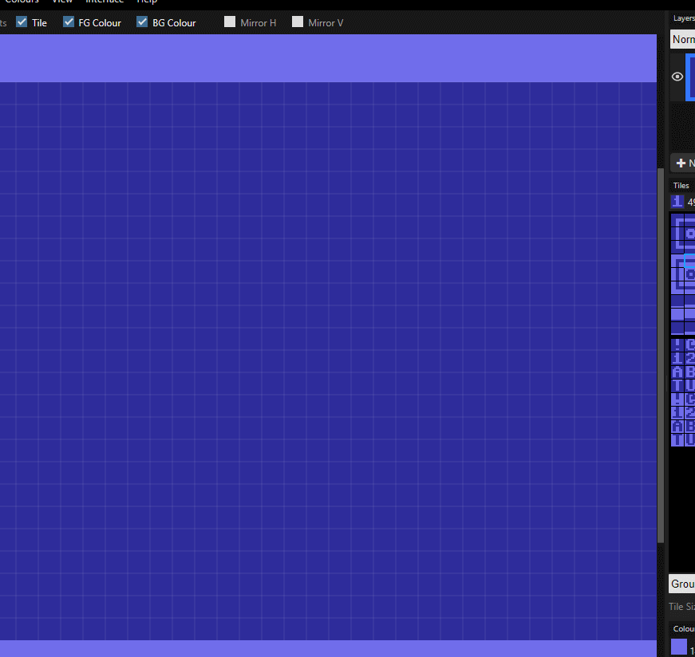
Drag and drop an image into the window to import the image as a tileset or a colour palette